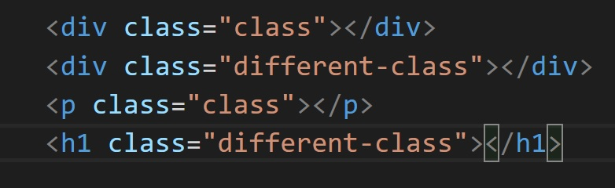
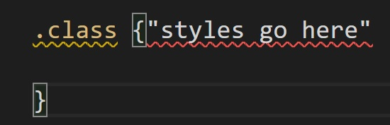

Classes
Classes can be used to select an element as defined in the html document. Is is defined in the html document using the following syntax.

The same class can be used to select multiple elements or it can be used to select individual elements.
By doing this we can specify a style to be applied to different tags. For example If we wanted to style a p tag, we could select it with ".p" in the css document. But this would apply the style to all of the p tags the same way. What if we wanted to style one p tag one way, but another p tag a different way. The answer is to give the p tag a class.
To select a class with css, we use the following notation.
This will select all the elements that have the given class name.
Handy Hint:
You can create a div with a class in vs code by simply typing ".the class name you want for the div here" in an html document and VS Code will automatically create it!